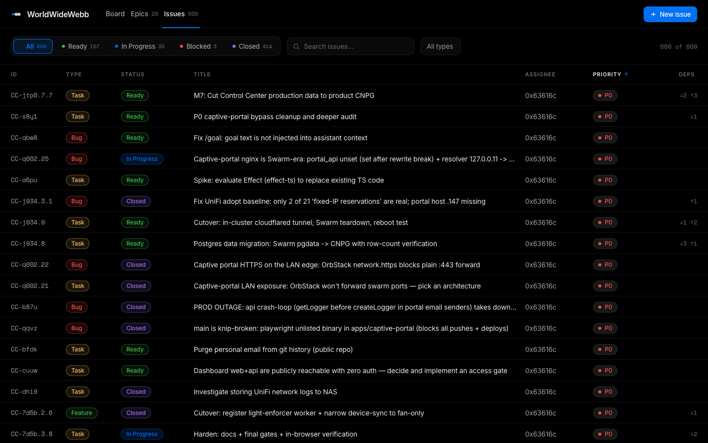
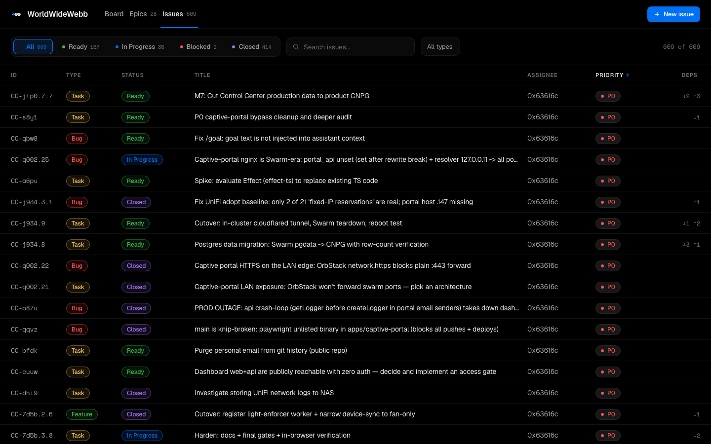

4 font options for beads-ui
Current is Space Grotesk. Pick one and I'll apply it. Same Issues view in each.
1 · Inter — UI standard, most neutral/readable
2 · Geist — Vercel's font, matches the aesthetic
3 · IBM Plex Sans — readable with a bit of character
4 · System (SF Pro) — native macOS, crisp